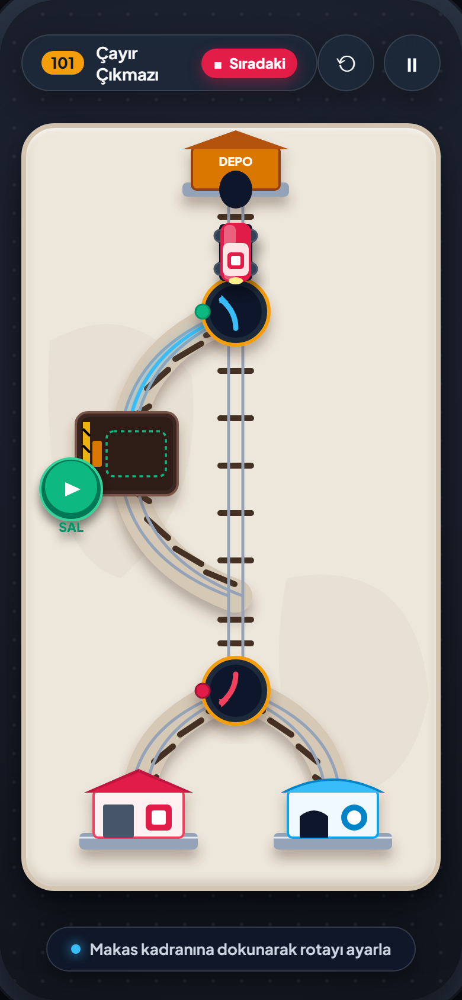
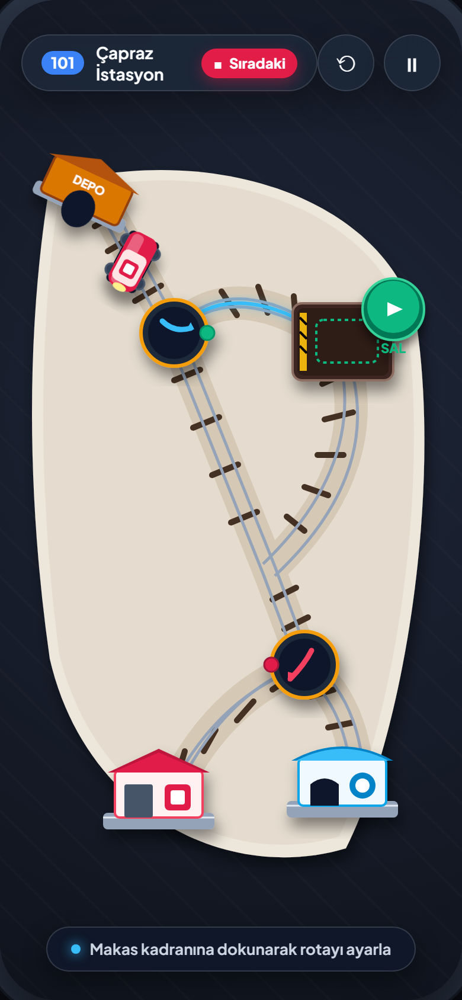
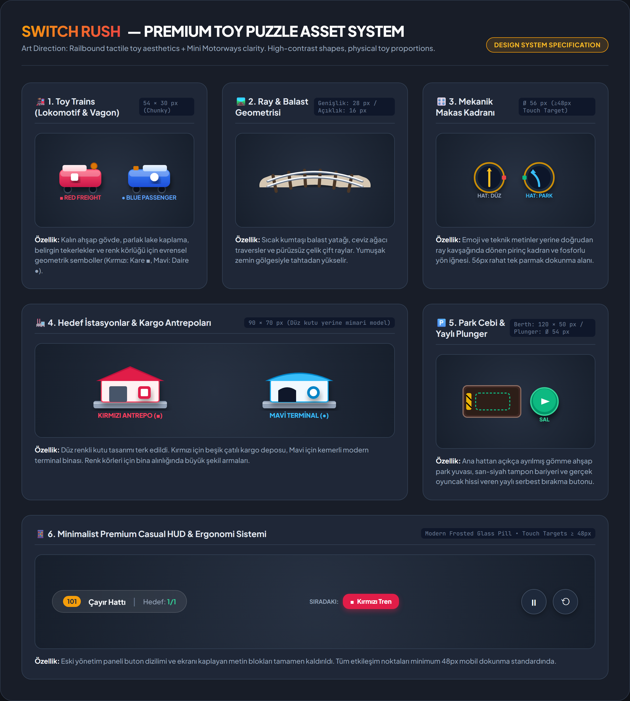
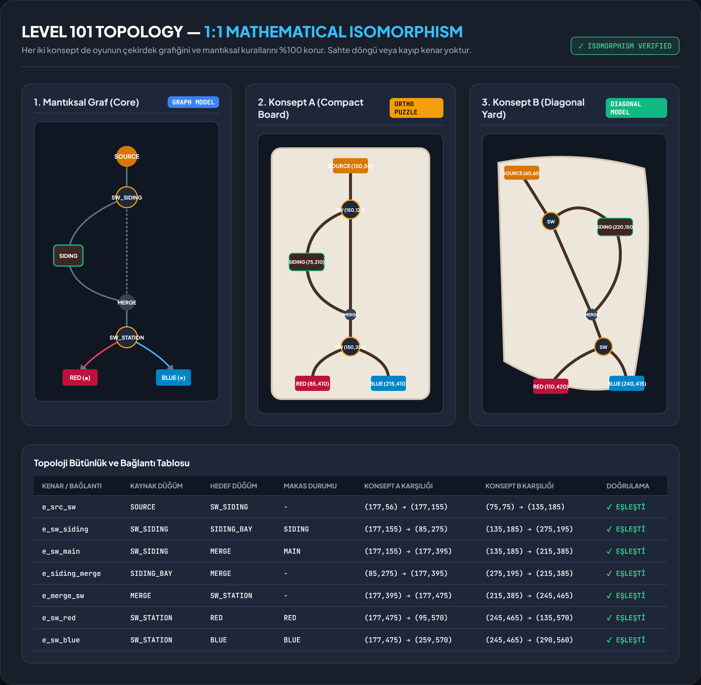

📱 1. Seviye 101 Mobil Ekran Tasarım Karşılaştırması (390×844)
Konsept A — Compact Puzzle Board
Ortho-Grid Tactile
- Oyun Alanı: Ekranın ortasında sınırları net, bej kumtaşı zeminli, gölgeli kompakt ahşap bulmaca tablası.
- Görsel Dil: Railbound tarzı net, dik/kavisli ray geometrisi. Sıfır görsel gürültü.
- Makas Kontrolü: Ray ayrımında doğrudan konumlandırılmış 56px pirinç mekanik kadran ve fosforlu yön iğnesi.
- Park Cebi: Sol tarafta girintili ahşap yükleme yuvası, güvenlik bariyeri ve 54px yaylı SAL butonu.
- İstasyonlar: Kırmızı kiremit çatılı kargo antreposu (■) ve Mavi kemerli modern terminal (●).
- Avantaj: Ekran oranına mükemmel oturur, dikey simetri algısı kolaylaştırır, bilişsel yük minimumdur.
Konsept B — Diagonal Rail Yard
Dynamic Angled Yard
- Oyun Alanı: Sol üstten sağ alta ~30° açıyla akan dinamik çapraz demiryolu garı kompozisyonu.
- Görsel Dil: El yapımı tren maketi hissi. Dikey flowchart/akış şeması algısını tamamen yıkar.
- Makas Kontrolü: Çapraz hatta entegre 56px pirinç mekanik kadran ve rotaya göre dönen gösterge.
- Park Cebi: Sağ üstte yüksek ahşap peron cebi (Spur siding). Ana hattan net kot farkıyla ayrılır.
- İstasyonlar: Çapraz hat sonlarında ray hizasında konumlanmış kırmızı depo ve mavi terminal.
- Avantaj: Yüksek görsel dinamizm, organik minyatür tren hissi, uzun hatların dengeli yerleşimi.
🎨 2. Görsel Asset Tasarım Sistemi (Vektör & Atlas Spesifikasyonu)
İlkel Phaser dikdörtgenleri yerine kullanılan gerçek oyun varlıkları: Chunky oyuncak trenler, çift çelik raylar, mekanik makas kadranları, mimari istasyonlar ve yaylı SAL butonu.

📐 3. Matematiksel Topoloji Eşleme ve Bütünlük Doğrulaması
Her iki konsept de Seviye 101'in 7 düğüm ve 7 kenarlı yönlü grafını %100 korur. Raylar farklı bir geometrik kurguda çizilse de mantıksal oyun motoruyla birebir örtüşür.

⚖️ 4. Konsept Karşılaştırma & Değerlendirme Matrisi
| Kriter | Konsept A (Compact Puzzle Board) | Konsept B (Diagonal Rail Yard) | Tasarım Değerlendirmesi |
|---|---|---|---|
| Okunabilirlik (Readability) | ★★★★★ (Mükemmel) | ★★★★☆ (Çok İyi) | Konsept A'nın ortogonal kurgusu ilk bakışta rotanın ve park cebinin anlaşılmasını maksimuma çıkarır. |
| Oyuncak / Minyatür Hissi | ★★★★☆ (Bulmaca Kutusu) | ★★★★★ (Minyatür Gar) | Konsept B, çapraz yerleşimi sayesinde gerçek bir model tren seti gibi doğal ve dinamik hissettirir. |
| Tek Parmak Ergonomisi | 56px Kadranlar, Doğal Başparmak Alanı | 56px Kadranlar, Geniş Erişim Alanı | Her iki konseptte de makaslar ve SAL butonu Apple HIG / Android 48px dokunma alanını aşar (54-56px). |
| Gelecek Seviyelere Uyarlanabilirlik | Dual Siding (104) ve FIFO (103-B) için modüler grid | Geniş elmas ağlar (105) için doğal rotalar | Konsept A modüler tabla genişletmelerine çok uygun; Konsept B serbest hatlara uygundur. |
| Flowchart / Şema Riskini Kırma | Yüksek (Ahşap tabla ve mimari binalar şemayı kırar) | Maksimum (Açılı akış teknik şema hissini tamamen yok eder) | Konsept B özellikle dikey akış hissiyatından tamamen kaçınmak isteyen oyuncular için idealdir. |